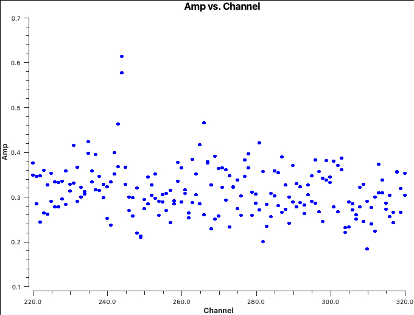

TW Hya: N₂H⁺ Spectral Line Imaging
Data
In this tutorial we will image emission from the N₂H⁺ (J=4-3) transition in the protoplanetary disc surrounding TW Hya. TW Hya is one of the nearest and best-studied planet-forming discs and has therefore become an important benchmark for studies of disc chemistry and structure.
We shall use self-calibrated ALMA observations from Project 2011.0.00340.S, "Searching for H₂D⁺ in the disk of TW Hya" (PI: Chunhua Qi). These data are also used in the official ALMA imaging tutorials.
The calibrated measurement set can be downloaded here:
[DOWNLOAD LINK]
After downloading the data, verify that the measurement set is available in your working directory before proceeding.
Table of Contents
- Inspect the Data
- Determine the Channels Containing the Line Feature
- Continuum Subtraction
- Creating a Dirty Cube
- Inspecting the Cube
- Producing the Final Cube
- Moment Maps
- Analysing the Final Cube
- Exporting the Results
Inspect the Data
Before imaging any spectral-line dataset it is important to understand the structure of the observations.
The first step is therefore to inspect the measurement set and determine:
- The science target.
- The number of spectral windows.
- The channel structure.
- The observing frequency.
- The antenna configuration.
This information will be useful later when choosing imaging parameters.
# In CASA
listobs(
vis='twhya.ms',
)
Take a few minutes to inspect the output. In particular identify:
- The field corresponding to TW Hya.
- The spectral window containing the N₂H⁺ transition.
- The central observing frequency.
- The total number of channels.
These quantities will be needed throughout the reduction process.
Determine the Channels Containing the Line Feature
Before producing a spectral cube we must determine which channels contain spectral-line emission. We also need to identify channels that are free of line emission because these will later be used to fit and subtract the continuum.
A convenient way to do this is to average the visibilities and plot amplitude as a function of channel number, frequency or velocity.
# In CASA
plotms(
vis='twhya.ms',
xaxis='channel',
yaxis='amp',
field='5',
avgspw=False,
avgtime='1e9',
avgscan=True,
avgbaseline=True,
showgui=True,
)

The spectral line appears as a deviation from the continuum level. Note the channel range occupied by the line emission and identify channels that appear free of line emission on either side of the feature.
To zoom in on the line, use in the Data panel of the plotms window:
spw='0:220~320'
These channels clearly show the N₂H⁺ emission line.
# In CASA
linefree='0:0~239;281~383'
These line-free channels will form the basis for continuum subtraction performed in the next step.
Continuum Subtraction
The measured visibilities contain contributions from both continuum emission and line emission.
For many scientific applications we are interested only in the spectral line itself. We therefore fit a continuum model using the line-free channels identified above and subtract this model directly in the visibility domain.
Performing the subtraction in visibility space is generally preferred because it avoids imaging artefacts and provides a cleaner isolation of the spectral-line signal.
# In CASA
os.system('rm -rf twhya.contsub.ms')
uvcontsub(
vis='twhya.ms',
field='5',
fitspec=linefree,
fitorder=0,
outputvis='twhya.contsub.ms',
)
# In CASA
plotms(
vis='twhya.contsub.ms',
xaxis='channel',
yaxis='amp',
field='5',
avgspw=False,
avgtime='1e9',
avgscan=True,
avgbaseline=True,
showgui=True,
)
The continuum-subtracted data should now have an average amplitude close to zero in the line-free channels.
Creating a Dirty Cube
Before performing any deconvolution it is often useful to examine the dirty cube.
A dirty cube is produced by Fourier transforming the visibilities without applying any CLEAN iterations.
This allows us to:
- Estimate the image noise.
- Determine which channels contain emission.
- Identify weak emission channels.
- Decide on an appropriate cleaning strategy.
The restoringbeam='common' option ensures that every channel
in the cube has the same restoring beam.
The parameters nchan, start and
width determine the extent and velocity resolution of the
spectral cube. These can also be used to average channels together when
appropriate.
The choice of velocity frame and velocity convention is also important. For Galactic studies it is standard practice to image cubes using the Local Standard of Rest Kinematic frame:
outframe='LSRK'This removes velocity shifts caused by the Earth's motion and allows line velocities to be compared consistently with other Galactic observations.
We also use the radio velocity convention for Galactic sources:
veltype='radio'The rest frequency is simply the laboratory transition frequency of the line under investigation.
# In CASA
rstfrq='372.67249GHz'
# In CASA
os.system('rm -rf twhya.dirty.cube*')
tclean(
vis='twhya.contsub.ms',
imagename='twhya.dirty.cube',
field='5',
spw='0',
specmode='cube',
perchanweightdensity=True,
nchan=15,
start='0.0km/s',
width='0.5km/s',
outframe='LSRK',
restfreq=rstfrq,
veltype='radio',
deconvolver='hogbom',
gridder='standard',
imsize=[250,250],
cell='0.1arcsec',
weighting='briggsbwtaper',
robust=0.5,
restoringbeam='common',
interactive=False,
niter=0,
pbcor=True
)